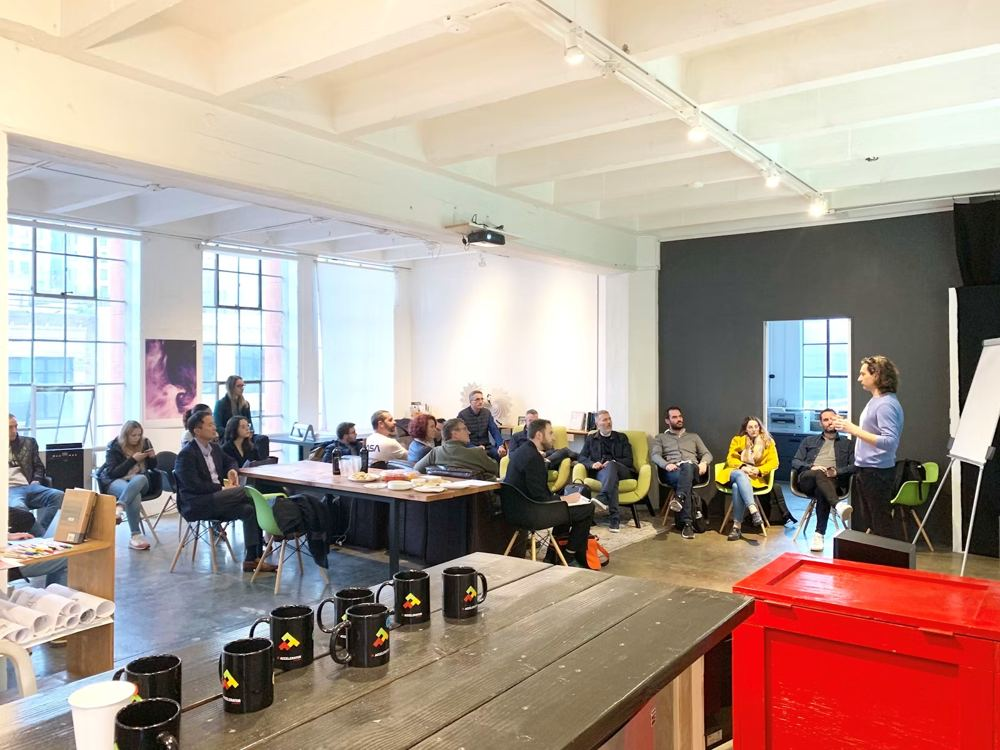

In October 2007, two broke roommates in San Francisco couldn’t afford their rent. A design conference was in town, every hotel was booked out, and Brian Chesky and Joe Gebbia had an idea that sounded almost embarrassing at the time: blow up three air mattresses on their apartment floor and rent them out to strangers for the weekend. They called it “AirBed & Breakfast.” Three guests showed up. It barely worked. But it worked just enough that they didn’t stop.
That’s usually how these stories start — not with a grand vision, but with someone shipping something half-finished because the alternative was doing nothing at all. It’s a pattern worth paying attention to if you’re an engineering student, because college trains you to do the opposite. You’re taught to finish things before anyone sees them. Startups punish that instinct.
It’s also why so many promising student projects never leave the laptop. The code works, the demo looks polished, and nobody outside the team has ever touched it. Meanwhile the builders who learn fastest are the ones willing to put something rough in front of real people and listen when it breaks.
Brian Chesky has emphasized the importance of solving real problems through entrepreneurship.
Brian Chesky · Co-Founder & CEO, Airbnb
For the next year, Chesky and Gebbia kept iterating on a site that barely functioned, taking feedback that often contradicted what they’d assumed, and rebuilding overnight based on what actual guests told them. Nobody was impressed by the code. What kept the idea alive was that real people were using it and telling them what was broken. That’s the first thing student builders usually get wrong — they treat feedback as something to collect after the product is “ready,” when in reality the product only becomes ready because of the feedback.
The idea is never the hard part
Almost nobody remembers “AirBed & Breakfast” as a business plan — because it wasn’t one. It was two guys watching what strangers were actually willing to pay for, and building the business around that observation instead of the other way round. The idea is the cheapest part of the whole process. What separates a project that goes somewhere from one that dies in a slide deck is whether anyone bothered to test if people wanted it. If you’ve ever sat in a hackathon team arguing over whose “idea” is better, this is worth remembering.
You have to sell before you can build
Sara Blakely ran into the same wall from the other direction. She didn’t start with a manufacturing plan or a distribution deal — she started by cutting the feet off a pair of pantyhose so she could wear them under white trousers, and years later turned that idea into Spanx by walking into department stores and pitching buyers herself, again and again, with no advertising budget and no industry connections.
Notice what she didn’t have: a prototype factory or a network of investors. What she had was a clear sentence about why the product mattered, and the nerve to say it to a buyer who could easily say no. For an engineering student that is an uncomfortable skill, because it can’t be debugged in private. The only way to practise pitching is to do it, in front of someone who owes you nothing.
That’s the part most coursework skips. In a lab, someone has already agreed to grade your work, so you never learn how it feels to explain a product to a stranger who can simply walk away. Founders live in that moment every day. It’s uncomfortable at first, but it teaches you faster than any rubric what people value, what confuses them, and what they will never pay for. One honest reaction from a real buyer is worth more than a perfect slide full of assumptions.

Blakely started without formal experience in sewing, business, retail, or fashion.
Sara Blakely · Founder, Spanx
She wasn’t the person with the most technical skill in the room. She was the person most willing to explain, in person, why it mattered. That’s usually the second thing engineering students underinvest in — we obsess over making the build technically correct and treat the pitch as an afterthought, when a working product nobody understands the value of is functionally dead, same as one that doesn’t run at all.
Rejection is information, not a verdict
What ties Chesky’s air mattresses to Blakely’s pantyhose isn’t the product — it’s that both started absurdly small, got rejected constantly, and treated each rejection as information instead of a verdict. Airbnb was turned down by investors repeatedly before it worked.
Blakely spent months cold-calling hosiery manufacturers, and most said no, before one finally agreed to make her product. Neither story is really about the “aha” moment. They’re about staying in the room long enough for the idea to be tested properly.
The takeaway
None of this means you need to drop out or build a unicorn. Most of us won’t. But there’s a version of this available to any student who takes one hackathon project or one side-build seriously enough to actually pitch it to a stranger and watch them react. You can learn a great deal about product thinking, resilience, and how ideas actually get validated from that one experience — lessons that are difficult to learn from coursework alone.
You don’t need to become a founder. You just need to think like one, at least once, before you graduate.
Next in this series: a lesson from a founder who built in public before it was a trend — and what it taught them about momentum.
Want to run something past us? vsbecell@gmail.com — or come find E-Cell at V.S.B. Engineering College, Karur.